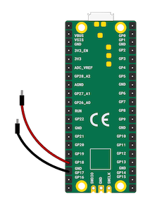
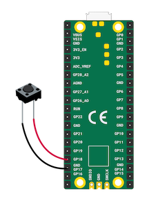
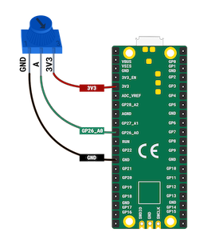
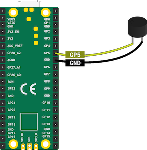

De Raspberry Pi Pico is een goedkope microcontroller die gebruikt wordt voor het maken van elektronische producten.
De invoer en uitvoer die ik heb gebruikt zijn:
Invoer
- Schakelaar
- Drukknop
- Potentiometer
Uitvoer
- LED
- RGB LED
- Zoemer
Beweeg de muis over de kaarten voor meer informatie:
Invoer
Schakelaar
Een schakelaar is een elektrische component die gesloten kan worden om electriciteit te laten stromen en geopend om te voorkomen dat electriciteit stroomt.
Drukknop
Een knop is een soort schakelaar die een verbinding maakt wanneer deze wordt ingedrukt.
Potentiometer
Een potentiometer is een analoog invoeronderdeel dat zijn weerstand verandert afhankelijk van de positie van het instelwiel.
Uitvoer
LED

LED staat voor light-emitting diode. Het bevat een materiaal dat oplicht als er een elektrische stroom doorheen gaat.
RGB LED

RGB staat voor Rood Groen Blauw. Met RGB LED's kun je code gebruiken om te bepalen hoeveel van elke kleur wordt uitgestraald.
Zoemer
Een passieve zoemer kan verschillende tonen afspelen. Het vereist een verbinding en een specifiek signaal om de gekozen toon te kunnen afspelen.